Surfaces in Jmol v.11
There is a testing / demo page including a Jmol applet to see results.
This documentation does not detail all the options, but aims to collect the different ways to render surfaces, and clarify their differences. For details, go to the official interactive scripting documentation for each command.
Syntax used: a command in the script language; a parameter description that must be filled in with a value. The mix of lower- and uppercase in the commands is for better readability, but Jmol is not case-sensitive.
Abbreviation: vdW = van der Waals.
Definition: probe (solvent probe) is a sphere that approximates the effective size of the solvent molecule. Jmol, as Rasmol, uses a sphere with 1.2 Å radius for water; Chime uses 1.2 Å for dots and 1.4 Å for surfaces. Other programs/authors use 1.4 Å. The probe radius can be defined using the set radius command.
Index:
Surfaces based on molecule:
Surfaces depicting orbitals:
Surfaces not based on molecule:
Saving and loading surface data
Coloring surfaces
1) Solvent-accessible surfaces (or Lee-Richards surfaces)
- 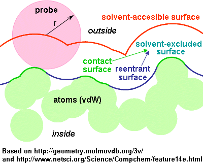Described by the center of the probe as it rolls along the atoms vdW spheres.
- Corresponds to using an extended sphere around each atom (at a distance from the atom centre equal to the sum of the atom and probe radii), and eliminating those points that lie within neighbour spheres.
- The accessible surface is therefore
sort of an expanded van der Waals surface.
- It is larger (more external) than the "molecular" surface.
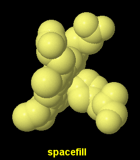
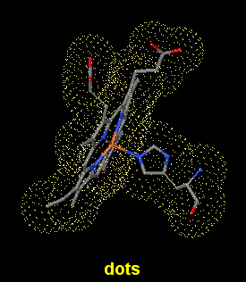How to obtain them in Jmol:
(images of dots 100% and spacefill 100% shown as a reference)
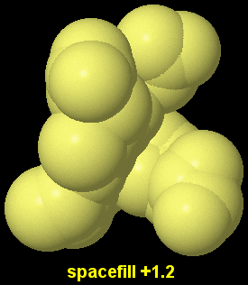a) Solid spheres
spacefill +1.2
- Draws atoms as expanded van der Waals spheres, giving the impression of a solid surface.
- Since the rendering uses the atoms, it is incompatible with showing atoms and bonds inside the "surface".
- 1.2 and 1.4 (Å for probe radius) are the commonly used values, but you can use any other.
- Color is according to previous color atoms command (CPK scheme by default).
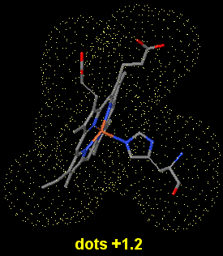b) Dotted surfaces
dots +1.2
- Draws a dotted surface, using expanded dotted spheres (but only surface dots, no dots in the enclosed volume).
- 1.2 and 1.4 (Å for probe radius) are the commonly used values, but you can use any other.
- Using the +n parameter overrides the existing set solvent and set radius status.
- Dots color is inherited from current color atoms and may be overrided by using color dots.
set solvent on; dots on
- Has the same effect as the former. The expansion of spheres (probe radius) will be 1.2 unless otherwise stated by a previous set radius.
To hide the dots: dots off
(note: geoSurface off will also hide the dots).
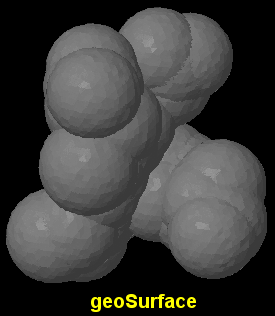c) Solid surfaces, crude and quick
geoSurface +1.2
- Draws a geodesic surface using the result of dots as vertices. Hence, the syntax is the same as for dots.
- It is a crude rendering but calculates quickly, and has better visibility than dots.
- Using the +n parameter overrides the existing set solvent / set radius status.
- Defaults to opaque grey, but can be colored and made translucent using the color geoSurface command.
set solvent on; geoSurface on
- Has the same effect as the former. The expansion of spheres (probe radius) will be 1.2 unless otherwise stated by a previous set radius.
To hide the surface: geoSurface off
(note: dots off will also hide the geoSurface).
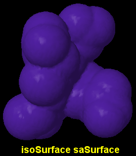d) Solid surfaces, fine and slow
isoSurface id saSurface radius
- Draws a continuous surface using the center of the rolling probe.
- It looks smoother in the valleys than the former methods, depending on the resolution value (see below).
- The radius (of the probe) is optional; its default setting is 1.2 Å or that otherwise determined by the set radius command.
- The optional id assigns a name to the surface, so that later one can turn it on and off selectively, change its color or translucency...
- Defaults to opaque blue, but can be colored and made translucent using the color isoSurface or color $named object command.
- Using isoSurface resolution n saSurface radius allows control over the fineness of detail of the surface. Default is 2 points per Å.
- Be aware that for very large molecules or increased values of resolution, the calculation may take minutes. During calculation, the command line prompt in the console is returned, but Jmol will not be responsive (seems to be locked, but it's just busy; check your CPU meter which will be at 100%); upon finishing, Script completed appears in the console.
- It is advisable to save surface data to a JVXL file so that delivering the surface to users happens in a fast way.
To hide the surface: isoSurface id off
Rasmol note: for the record, Rasmol 2.7.3 has surface solvent radius for this.
2) Molecular surfaces (or solvent-excluded surfaces, or Connolly surfaces)
- Described by the closest point of the solvent "probe" as it rolls along the atoms vdW spheres.
- In other words: the surface traced by the inward-facing surface of the probe.
- Still in other words: the evolute of the surface of the probe.
- Composed of
- contact surface: is the part of the vdW surface that can be touched by the probe.
- reentrant surface: formed by the inward-facing part of the probe when it is in contact with more than one atom.
- (Delimits the solvent-excluded volume in Connolly's terminology, equal to van der Waals volume plus interstitial volume)
- The surface is smaller (more internal) than the solvent-accesible surface.
 Here, we only have an option for solid surfaces, fine and very slow:
Here, we only have an option for solid surfaces, fine and very slow:
isoSurface id solvent radius
isoSurface id molecular
- Draws a continuous surface using the contact and reentrant surfaces.
- The surface is quite smoother than solvent-accesible ones.
- isoSurface solvent is synonymous with isoSurface solvent 1.2 (unless another value has been set using set radius).
- isoSurface molecular is synonymous with isoSurface solvent 1.4.
- The optional id assigns a name to the surface, so that later one can turn it on and off selectively, change its color or translucency...
- Defaults to opaque blue (a lighter tint), but can be colored and made translucent using the color isoSurface or color $named object command.
- Using isoSurface resolution n solvent radius allows control over the fineness of detail of the surface. Default is 2 points per Å.
- Be aware that for molecules over 100 atoms or for increased values of resolution, the calculation may take minutes. During calculation, the command line prompt in the console is returned, but Jmol will not be responsive (seems to be locked, but it's just busy; check your CPU meter which will be at 100%). Upon finishing, Script completed appears in the console.
- It is advisable to save surface data to a JVXL file so that delivering the surface to users happens in a fast way.
To hide the surface: isoSurface id off
Rasmol note: for the record, Rasmol 2.7.3 has surface molecule radius for this.
Effect of probe radius: (click to enlarge)
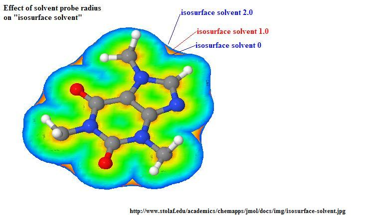
Summarizing and comparing different isosurface options: (click to enlarge)
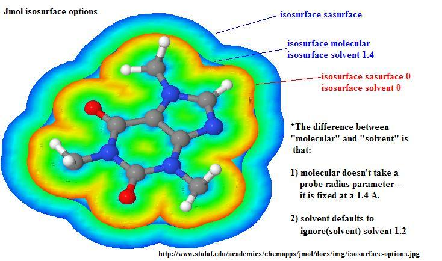
3) Partial or open surfaces
All the above, as usual with Jmol script commands, applies to the currently selected set of atoms. A closed surface can be generated around the selected set of atoms, but another possibility is to get an open or fragmented surface, that does not close where there are unselected atoms.
For dots and geoSurface
| If set dotsSelectedOnly off or false is used (the default), the dots or geoSurface will be fragmented, interrupted at the areas where they would contact with the surface for nonselected neighbours. |
You can first use set dotsSelectedOnly on or true, meaning that the dots or geoSurface will close around the currently selected atoms. |
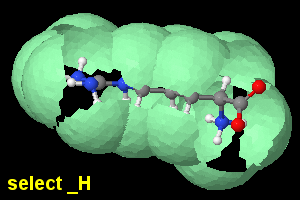
set dotsSelectedOnly off;
select _H; geoSurface +1.2 |
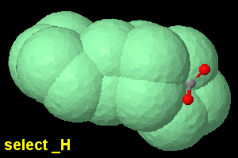
set dotsSelectedOnly on;
select _H; geoSurface +1.2 |
In addition, dots can
be turned on and off selectively (unlike isoSurface or geoSurface).
For isoSurface
a) By default, it will be built upon previously selected atoms, and will be interrupted at the areas where they would contact with the surface for nonselected neighbours, except that isoSurface saSurface and isoSurface solvent apply an implicit ignore(solvent). To override that, use ignore(none) explicitly (ignore is explained below).
b) You can use
isoSurface select(atom expression) saSurface
isoSurface select(atom expression) solvent
isoSurface select(atom expression) molecular
to make a temporary selection to which this surface will apply --without affecting the overall set of selected atoms--. The surface will be interrumpted as before, if applicable.
c) If you don't want the nonselected atoms to affect or interrupt the surface, use
isoSurface ignore(atom expression) saSurface
isoSurface ignore(atom expression) solvent
isoSurface ignore(atom expression) molecular
This
turns out to be critically important;
for example, you don't want to include solvent molecules inside the "solvent surface". It may also be needed where there are close contacts with other parts of the molecule (e.g., other chain or an hetero group); otherwise, the surface will have "holes".
Options (b) and (c) can be combined together, as in
isoSurface surf1 select(*:A) ignore(hetero) solvent 1.3
To have a closed surface around a certain selected set of atoms, one can do:
define temp atom expression; isoSurface surf1 select(temp) ignore(not temp) molecular
4) Atomic and molecular orbitals
Using lcaoCartoon
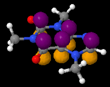 |
Using MO
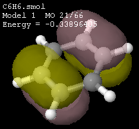 |
Using isoSurface atomicOrbital
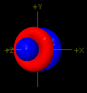 |
Using isoSurface lcaoCartoon , isoSurface lobe , isoSurface MO
(someone else can write about these)
5) Mathematical, geometrical, non-molecular surfaces
This means surfaces that do not depend on molecule geometry, but are based on a mathematical formula (although they can be located relative to atoms of the molecule).
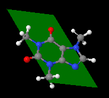draw id size plane {x y z} {x y z} {x y z}
draw id size plane (atom expression) (atom expression) (atom expression)
- Draws a quadrilateral plane defined by the 3 points or atom expressions given.
- Braces or parenthesis, respectively, are compulsory.
- If no size is given, the plane extends to the atoms or coordinates. If a size is given, the plane extends (size>100) or shrinks (size<100).
- The optional id assigns a name to the drawn object, so that later one can turn it on and off selectively, change its color or translucency...
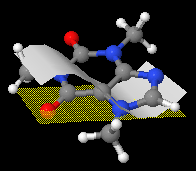pMesh
- Reads surface data from a file.
- The surface is a combination of triangles or cuadrilaterals.
- Available renderings are: dots in the vertices, mesh joining the vertices, solid surface joining the vertices. Any combination can be used, using the keywords dots noDots mesh noMesh fill noFill . (Default is fill noMesh noDots).
- Color and translucency are also allowed for the filled pMesh, using color pMesh .
- Look up the interactive scripting documentation for description of the pmesh options and file format.
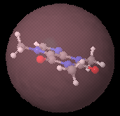isoSurface id center {x y z} sphere radius
isoSurface id center (atom expression) sphere radius
- Draws a sphere, either centered on coordinates or centered based on a set of atoms. Braces and parenthesis, respectively, are mandatory.
- Default center is the origin of coordinates {0,0,0}.
- The optional id assigns a name to the surface, so that later one can turn it on and off selectively, change its color or translucency...
isoSurface id center {x y z} ellipsoid {cx cy cz e}
isoSurface id center (atom expression) ellipsoid {cx cy cz e}
- 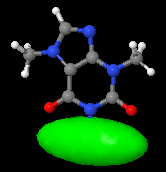Draws an ellipsoid with this geometry:
- orientation: the ellipsoid main axis is defined between the declared center and the cx cy cz point.
- shape: e defines the eccentricity, i.e. the ratio between the other two axes and the main axis (the two secondary axes have a fixed ratio =1 between themselves):
e<1: ellipsoid is elongated along the main axis (cigar shape);
e>1: ellipsoid is shortened along the main axis (disk shape).
- size: apart from changing cx cy cz, the size of the ellipsoid can also be changed using the scale n keyword (before the ellipsoid keyword).
- The optional id assigns a name to the surface, so that later one can turn it on and off selectively, change its color or translucency...
Other options, more advanced (see the interactive scripting documentation):
isoSurface plane
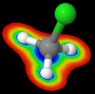 |
isoSurface functionXY
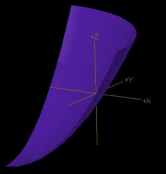 |
6) Saving and loading surface data
Surface output to and input from JVXL (Jmol Voxel) format file
- Briefly: JVXL is specific to Jmol and is a much more compact alternative to Cube format, containing only the information for one or a few surfaces. Further, it can be generated by Jmol, while Cube is only generated by Gaussian (a commercial program).
- More details in the isoSurface documentation and in detailed specification of the JVXL format (PDF).
Saving surface data into a JVXL file:
- First, generate and render the surface (isoSurface saSurface or isoSurface solvent or any other isosurface).
- Suggestion: clear the console (this facilitates copying the complete text later).
- If you are working in the console, use show isoSurface .
- Equivalent: pop-up menu > Show > Isosurface JVXL data (will open the console and output the data to it).
- From script: console on; show isoSurface .
- Copy the (long) result from the console and paste it into a text editor. Save the file (any extension will do, but .jvxl is suggested).
Loading data from a JVXL file:
- This renders the surface in almost no time (much less than the calculation needed to generate the surface the first time).
- Simple way: isoSurface "filename" or isoSurface file "filename"
- Double quotes are mandatory around the filename (path, name and extension). If required while writing the page with JavaScript, you can use isoSurface "filename" . The keyword file is optional.
- If the file contains data for several isosurfaces or the isosurface data is within the same file as the coordinates, look up the interactive scripting documentation.
Surface input from Gaussian Cube format file
- Same syntax as loading from a JVXL file (above).
7) Coloring surfaces
Use color dots , color geoSurface , color isoSurface , color pMesh , etc.
If the isosurface was assigned an id, then use color $id color specification.
Remember you can use translucent or opaque in addition to the color.
Isosurfaces can also be colored in gradients according to a "map", including by distance, by molecular electrostatic potential, etc. Seek more information on the official Interactive Scripting Documentation.
This page was written by Angel Herráez, Universidad de Alcalá, in Spain. Information was obtained through testing, from jmol-users and jmol-developers e-mail distribution list, and from Bob Hanson's Interactive Scripting Documentation and example pages. Images generated by Angel Herráez or Bob Hanson. Contributions are welcome.
Some bibliography (used and potential):
{kind=link}
{kind=link}